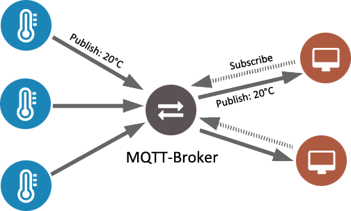
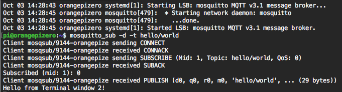
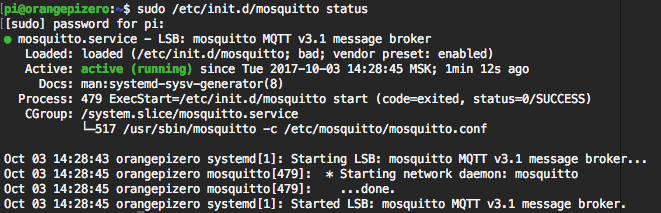

Установка MQTT брокера Mosquitto на Raspberry Pi и Orange Pi
Для одноплатных компьютеров на Linux cуществует несколько MQTT брокеров. Одним из самых популярных является Mosquitto. Сегодня мы с вами разберемся, как поставить серверную и клиентскую, а также как проверить работу протокола MQTT. Данная инструкция отлично подходит для Raspberry Pi с установленной системой Raspbian и Orange Pi с системой Armbian.
1. Обновляем систему
Первым делом перед началом установки нам необходимо обновить систему. Подключаеся к нашему Pi по SSH и вводим:
sudo apt-get update
sudo apt-get upgrade
Подробнее посмотреть как подключаться к Pi по SSH и что потом можно делать вы можете в нашей статье.
2. Устновка брокера и клиента “mosquitto”
К сожалению, обычные библиотеки “apt-get” Raspberry Pi (Orange Pi) не содержат последнюю версию Mosquitto software. Поэтому перед установкой нам нужно будет обновить библиотеки. Если на сервере будет установлена не последняя версия брокера, то могут появляться ошибки в процессе работы.
Добавляем ключ и обновляем репозиторий. Вводим эти строчки по очереди. Иногда надо будет вводить пароль от вашего пользователя и нажимать Y для согласия с установкой.
sudo wget http://repo.mosquitto.org/debian/mosquitto-repo.gpg.key
sudo apt-key add mosquitto-repo.gpg.key
cd /etc/apt/sources.list.d/
sudo wget http://repo.mosquitto.org/debian/mosquitto-jessie.list
sudo apt-get update
Устанавливаем MQTT брокер (сервер):
sudo apt-get install mosquitto
Устанавливаем MQTT клиент:
sudo apt-get install mosquitto mosquitto-clients
После установки mosquitto сервер будет автоматически запускаться при загрузке системы.
3. Останавливаем сервер для настройки
После установки сервер MQTT сразу запускается. Нам необходимо оставновить его, чтобы произвести последующую настройку.
sudo /etc/init.d/mosquitto stop
4. Настройка
Открываем файл настроек
sudo nano /etc/mosquitto/mosquitto.conf
и заменяем его содержимое на следующее:
# Place your local configuration in /etc/mosquitto/conf.d/
#
# A full description of the configuration file is at
# /usr/share/doc/mosquitto/examples/mosquitto.conf.example
pid_file /var/run/mosquitto.pid
persistence true
persistence_location /var/lib/mosquitto/
log_dest topic
log_type error
log_type warning
log_type notice
log_type information
connection_messages true
log_timestamp true
include_dir /etc/mosquitto/conf.d
Сохраняем, закрываем программу nano и выходим обратно в терминал (ctrl+o, Enter, ctrl+x).
5.Запускаем сервер MQTT
sudo /etc/init.d/mosquitto start
6. Проверяем работу MQTT брокера
Для проверки работы нашего MQTT брокера нам понадобится MQTT клиента. Это могут быть смартфоны с MQTT клиентами, которые подключены к той же Wi-Fi сети. Но мы воспользуемся более простым способом - подключимся к серверу 2 терминалами параллельно.

Нам необходимо, чтобы первый терминал подписался на топик hello/world, второй терминал отправил в этот топик сообщение и первый терминал его получил.
Итак, в первом терминале, в котором вы делали все настройки, подписываемся на канал hello/world:
mosquitto_sub -d -t hello/world
Открываем второе окно терминала, по SSH подключаемся к нашему серверу и отправляем сообщение в канал hello/world:
mosquitto_pub -d -t hello/world -m "Hello from Terminal window 2!"
В результате в первом окне появится сообщение:
Hello from Terminal window 2!

Поздравляем! Ваш MQTT брокер работает!
7. Статус сервера MQTT
Проверить стаус вашего MQTT брокера вы всегда можете через терминал:
sudo /etc/init.d/mosquitto status
После этой команды в терминале будет показана подробная информация о состоянии вашего сервера.

8. Настройка пароля для MQTT
Для тестов и маленьких проектов вы можете использовать подключение к MQTT серверу без пароля, но в больших системах для повышения уровня безопасности необходимо добавить логин и пароль. Это делается достаточно просто.
Для того, чтобы клиенты могли подключиться к вашемо брокеру только по логину и паролю, необходимо создать конфигурационный файл, который будет содержать имя пользователя и зашифрованный пароль. Вводим в консоли:
sudo mosquitto_passwd -c /etc/mosquitto/passwd <username>
Вместо <username> необходимо указать имя пользователя, которому будет разрешен доступ, например, mqtusr. После выполнения этой команды юзер mqtusr будет добавлен в систему. Дальше необходимо будет ввести ваш пароль от юзера pi, а потом 2 раза пароль для доступа юзера mqtusr к mqtt брокеру. В качестве второго пароля не воодите пароль от пользователи pi, лучше придумайте новый.
Теперь необходимо поменять настройки доступа к системе, для этого необходимо отредактировать файл /etc/mosquitto/conf.d/default.conf на вашем pi. Вы можете использовать для этого любой текстовый редактор, я предпочитаю nano, поэтому в консоли ввожу:
sudo nano /etc/mosquitto/conf.d/default.conf
В открывшейся файл добавляем 2 строчки:
allow_anonymous false
password_file /etc/mosquitto/passwd
Сохраняем и закрываем файл. Для этого в nano нажимаем ctrl+x, выбираем Y и нажимает Enter. Как вы видите в этом конфиге мы прописали в каком файле хранятся юзеры и пароли для подключения к нашему MQTT брокеру, а также мы запретили подключение к серверу всем пользователям без логина и пароля.
Теперь необходимо перезапустить MQTT сервер, для этого вводим в консоли:
sudo systemctl restart mosquitto
Настройка закончена - безопасность вашей системы теперь на высшем уровне!
�